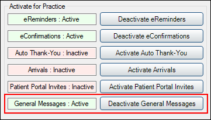

General Messages
In eServices Setup, click Automated Messaging.

General Messages are texts or emails sent after an appointment has been set complete. For example, a text may go out after the appointment inviting the patient to leave a review. Emailed messages can be sent at no additional cost. To send messages by text, Texting is required and a per text message fee applies.
To send automated messages before appointments, see eReminders.
Activate / Deactivate General Messages
General Messages can be activated or deactivated as needed.
- To enable General Messages, click Activate General Messages. The General Messages row will display in green with a status of Active.
- To disable General Messages, click Deactivate General Messages. The General Messages row will display in red with a status of Inactive.
After activating General Messages, set up General Message Rules.
General Message Rules
To edit an existing General Message Rule, double-click a General Message Rule from the Automated Messaging Rules grid. To add a new rule, click Add General Message.
For information on adding and editing rules, see Edit Rule.
Using General Messages
- Activate General Messages.
- In Automated Messaging Advanced Settings, choose which appointment statuses will receive a general message once set complete.
- To exclude patients from receiving general messages, create a new Appointment Confirmation Status or choose existing statuses and ensure Send General Message is disabled in Automated Messaging Advanced Settings for those statuses.
- Update the confirmation status of the appointment to a status that has enabled Send General Message.
- To not send the general message (e.g., if the general message is a survey link that you don't want to send to a patient) make sure the updated appointment status has disabled Send General Message instead.
- Set the appointment complete.
Any general message will be sent automatically as scheduled.